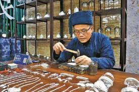
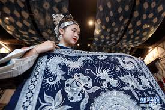

主要非遗项目

京剧
传统戏曲京剧是中国传统戏曲艺术的瑰宝，被誉为中国国粹。它融合了唱、念、做、打等多种艺术形式。

景泰蓝制作技艺
传统技艺景泰蓝是中国著名的特种金属工艺品，以其精美的造型和绚丽的色彩闻名于世。

北京料器制作技艺
传统技艺北京料器是一种传统的玻璃工艺品，以其精湛的技艺和独特的艺术风格著称。

北京绢花制作技艺
传统技艺北京绢花是一种传统的手工艺品，以其逼真的造型和精美的工艺深受喜爱。